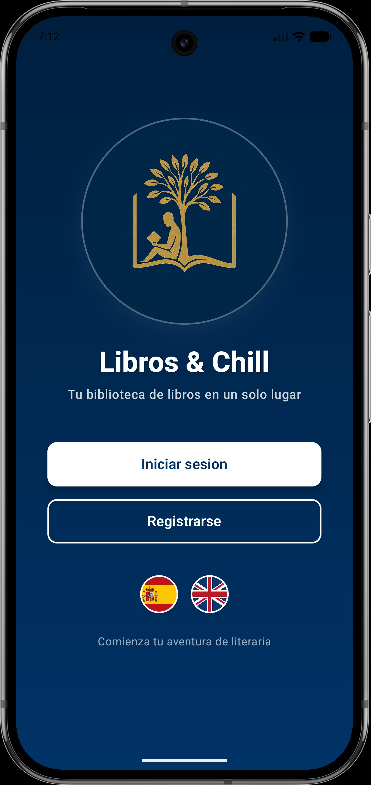
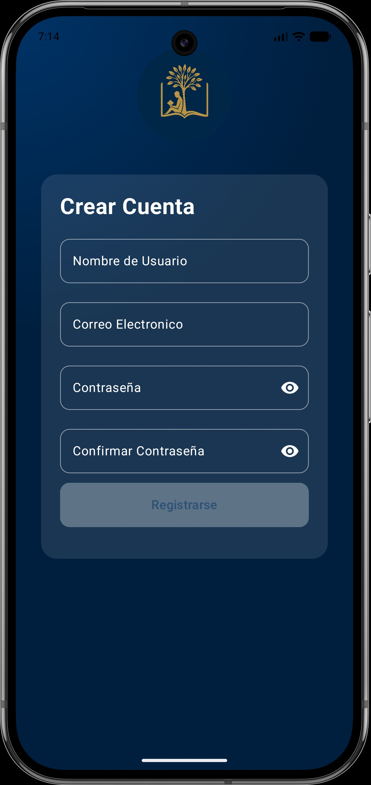
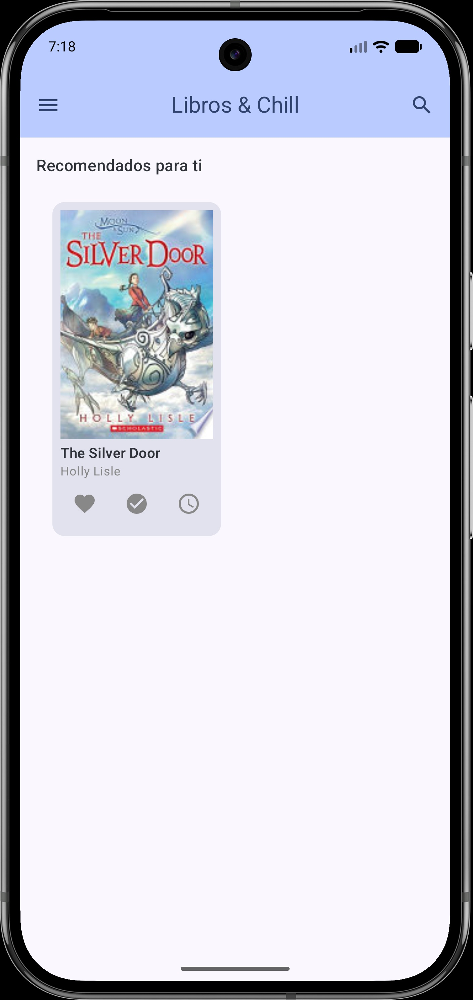
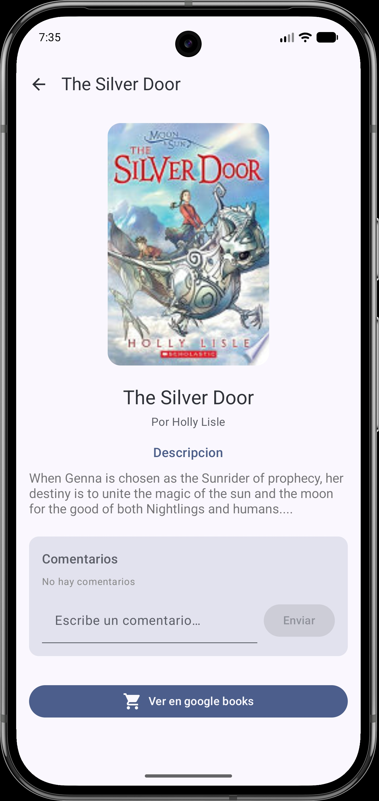
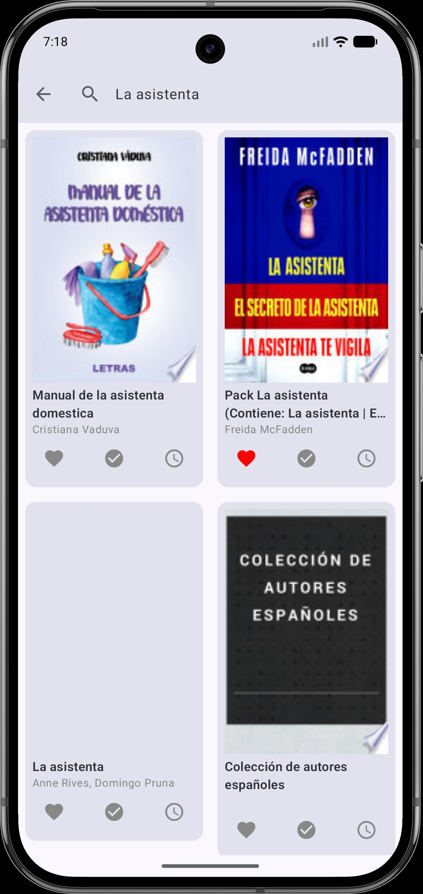
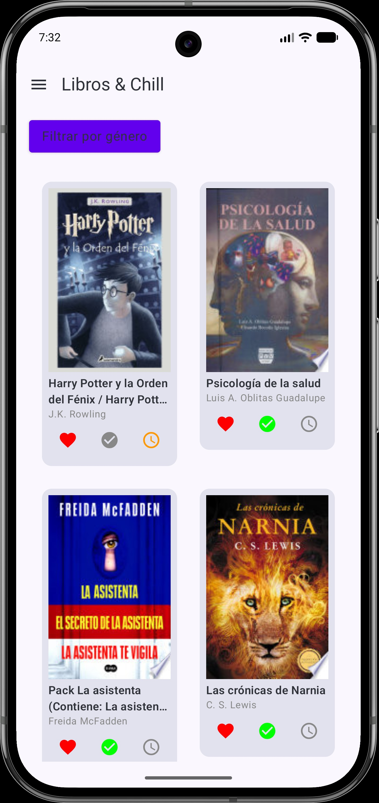
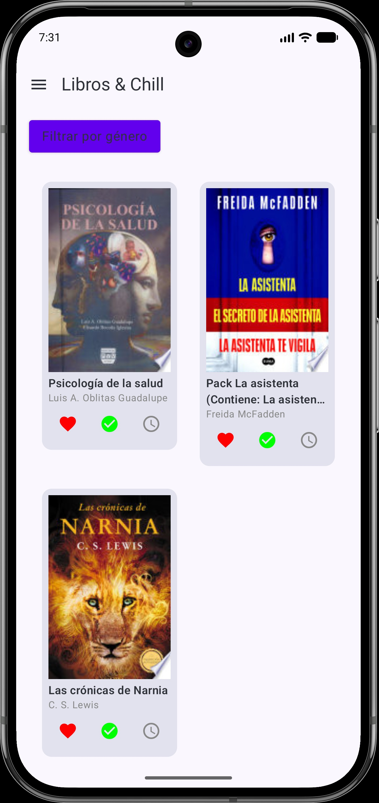
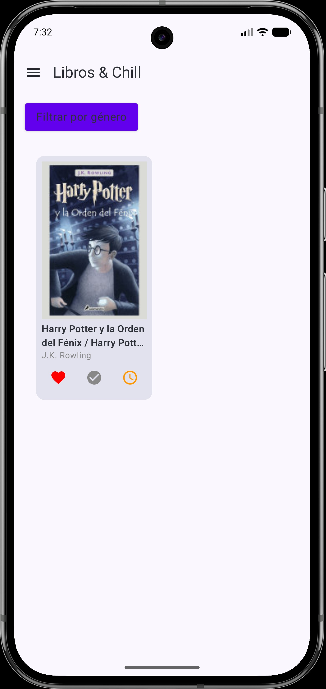

Libros & Chill
Libros & Chill es una aplicación Android desarrollada para organizar tu biblioteca personal de forma sencilla y visual. Permite gestionar libros, añadir opiniones y llevar un registro de tus lecturas.
Libros & Chill es una aplicación Android desarrollada para organizar tu biblioteca personal de forma sencilla y visual. Permite gestionar libros, añadir opiniones y llevar un registro de tus lecturas.
Libros & Chill fue desarrollado en Kotlin con el objetivo de ofrecer una solución intuitiva para lectores que desean gestionar su biblioteca personal de manera eficiente.
Se utilizó Firebase Authentication para la gestión de usuarios y Firestore como base de datos en tiempo real para almacenar la información de libros, favoritos y estado de lectura.
La aplicación se integra con la Google Books API para obtener información actualizada de los libros (portada, sinopsis, autor, etc.) de forma automática.
El diseño sigue los principios de Material Design de Google, garantizando una experiencia visual moderna, intuitiva y consistente en todos los dispositivos Android.

Acceso con inicio de sesión, registro y selector de idioma.

Creación de cuenta integrada con Firebase Authentication.

Recomendaciones personalizadas y navegación principal.

Sinopsis, autor, portada y opción de compra.

Consulta libros por título o autor usando la API.

Listado personal de libros favoritos filtrables.

Historial de libros completados por el usuario.

Libros guardados para futuras lecturas.